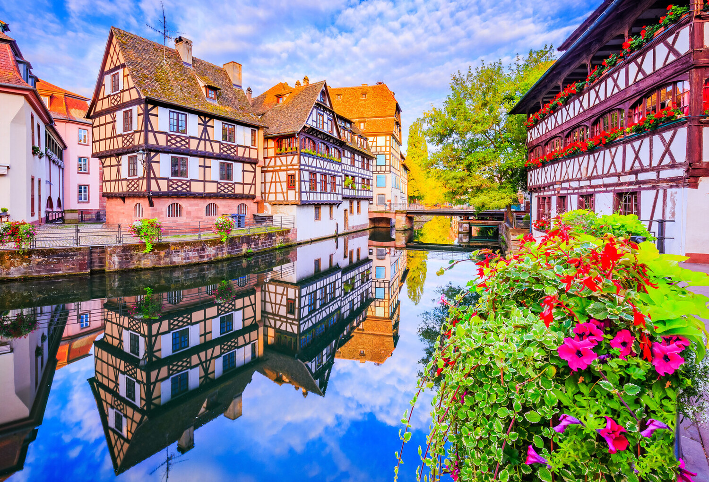
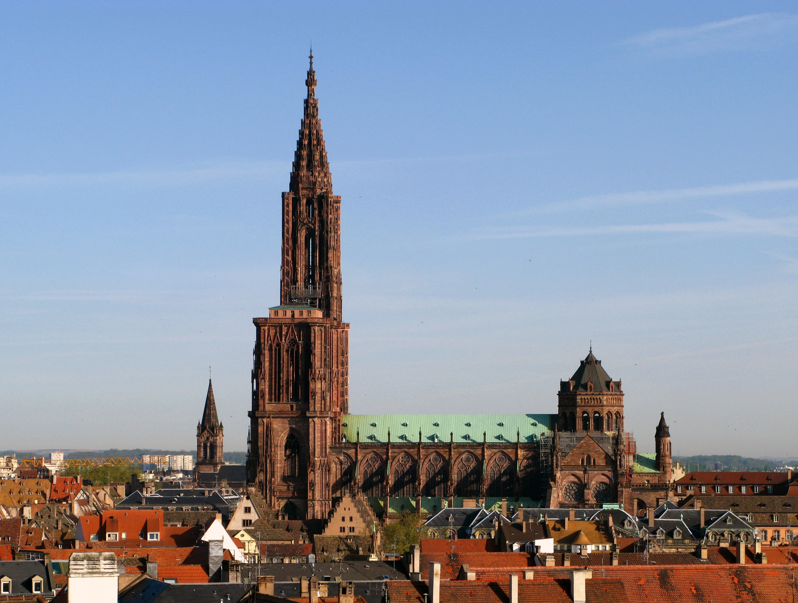
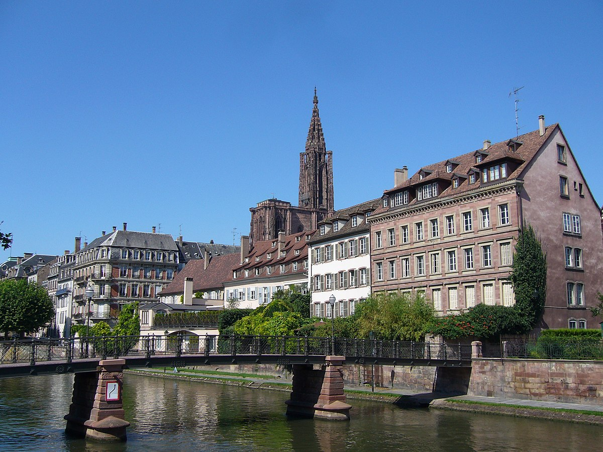
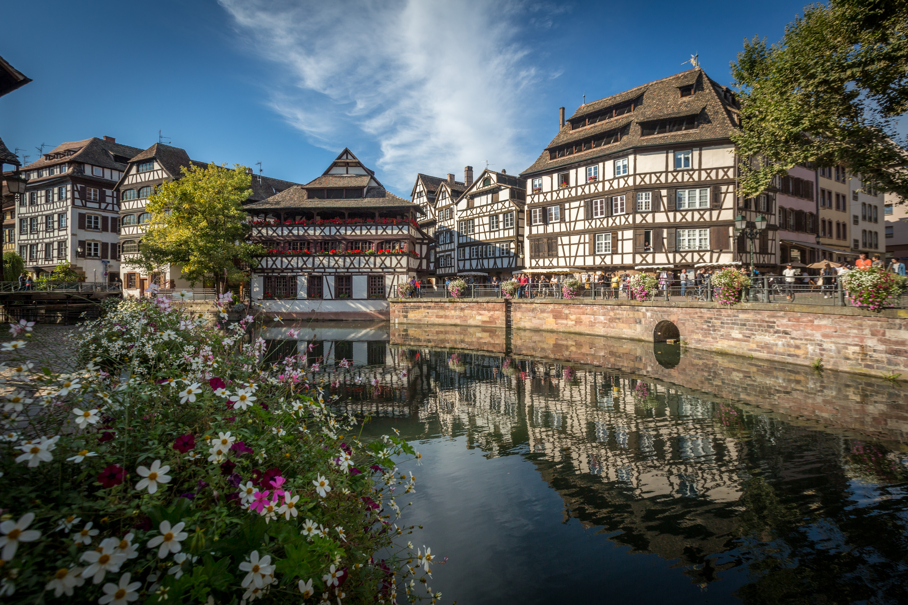
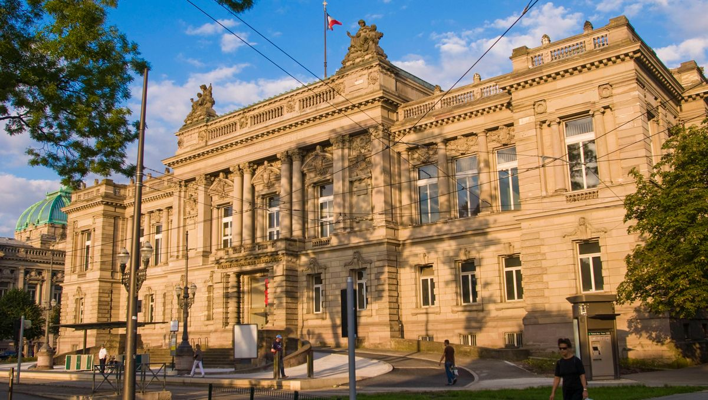
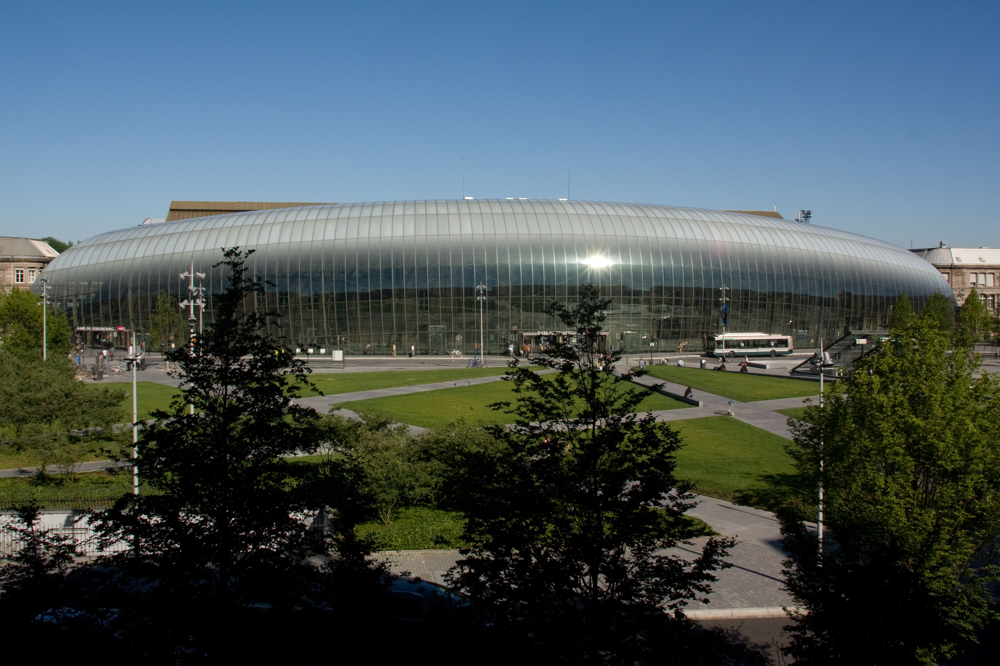
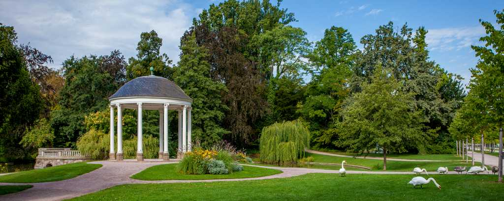

Strasbourg
Strasbourg est la capitale de la région Alsace et du département du Bas-Rhin. C'est une ville dynamique et cosmopolite, connue pour son riche patrimoine historique et culturel, ainsi que pour son importance politique et économique.
  Patrimoine Historique et Culturel
- Cathédrale Notre-Dame de Strasbourg: Chef-d'œuvre de l'architecture gothique, la cathédrale est l'un des monuments les plus visités de France.
- Petite France : Quartier pittoresque avec ses maisons à colombages et ses canaux, classé au patrimoine mondial de l'UNESCO.
- Théâtre national de Strasbourg
- Musée d'Art moderne



Institutions Européennes
- Parlement européen : Strasbourg est l'une des trois villes sièges du Parlement européen, accueillant les sessions plénières.

Autres
- Gare de Strasbourg : Connectée au réseau TGV, offrant des liaisons rapides vers Paris, Lyon, Marseille, ainsi que vers l'Allemagne et la Suisse.
- Université de Strasbourg : L'une des plus grandes universités de France, avec une forte tradition de recherche et d'enseignement.
- Parc de l'Orangerie


